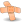
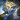
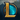
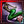

V26.01

V26.01


The Laws of Stone skins- 2026 Season 1: For Demacia
- Demacia-themed map
- Game Pacing Changes
- Role Quests
- Crystalline Overgrowth
- Faelights
- Itemization Update
This is the version article (patch notes) for patch 26.01 in 
New Cosmetics[edit | edit source]
The following Champion skins have been added:
 Petricite Cho'Gath (Battle Pass)
Petricite Cho'Gath (Battle Pass)- (Battle Pass)
- ()
 Durand's Legacy Taliyah (Battle Pass)
Durand's Legacy Taliyah (Battle Pass)
The following Chroma sets have been added:
The following Summoner icons have been added:
-
Prestige Edition Veiled Lady Morgana Border
-
Petricite Nautilus Border
-
 Petricite Cho'Gath Border
Petricite Cho'Gath Border -
 Durand's Legacy Taliyah Border
Durand's Legacy Taliyah Border -
Demacia Welcomes You
-
Heroes Of Demacia
-
Justice Soars
-
Petricite Minion
-
Dauntless Poro
-
Petricite Park
-
 Demacia Wasn't Built In A Day
Demacia Wasn't Built In A Day


{kind=link}
{kind=link}
{kind=link}
{kind=link}
{kind=link}
{kind=link}
{kind=link}
{kind=link}
{kind=link}
{kind=link}
{kind=link}
The following Ward skins have been added:
-
2026 Season 1
{kind=link}
The following Emotes have been added:
-
YOU ROCK!
-
Shake it!
-
Good Vibes
-
Petricite Roar
-
Be With Me
-
You Disappoint Me
-
Nailed It
-
Demacian Fanfare
-
GarenHype
-
Lightshield Stonks
-
Eagle Hug!
{kind=link}
{kind=link}
{kind=link}
{kind=link}
{kind=link}
{kind=link}
{kind=link}
{kind=link}
{kind=link}
{kind=link}
{kind=link}
The following Nexus Finishers have been added:
-
Glory of Demacia
{kind=link}
League of Legends V26.01[edit | edit source]
Client[edit | edit source]
- Custom games
- Position selection is now enforced in all Summoner's Rift games via the pre-game lobby.
- Clash
- The Demacia Cup will be happening on Summoner's Rift this patch.
- Registration Begins: January 12, 2026 (11:00 AM Local Time)
- Tournament Dates: January 17 and 18, 2026 (~4-7 PM Local Time, varies by region)
- Demacia Rising
- New metagame in the client.
- Player Behavior
- Starting with this patch we've added the capability to terminate lobbies during champion select with detection systems that will evaluate players for hostaging when they're reported in champion select. We don't expect it to be perfect or catch every case on release, and will continue to build upon these detections throughout the year, so please send those reports in to help us evolve our systems. As a reminder, trying something off-meta or having strategic disagreements with your team do not automatically qualify as hostage taking.
- Champion selects will be terminated when a player in champion select is reported and determined to be holding the lobby hostage to force a dodge or for any other reason. This will never trigger without a report in champion select, so be to sure to report players you believe are hostaging.
- When a champion select is terminated by hostaging detection, the offender will receive a penalty that will not allow them to immediately queue again, and all other players will re-enter matchmaking similar to if a player dodges today.
- Penalties for repeated disruptive gameplay have been increased.
- Improved detections for intentional non-participation in-game.
- If you receive an Account Ban for having an inappropriate Riot ID, you'll be unable to change your Riot ID until the ban is over.
- Riot Games Community Pact is now shown to players when they launch the game for the first time of the season.
- Ranked
- The S3 Ranked 2025 season will end on local server time 2026-01-07 at 23:59:59. Ranked Queues (Solo/Duo and Flex) will be disabled briefly as the season ends. S3 2025 Ranked Reward Mission will end at around the same time.
- Shard Transfers will be disabled 2026-01-07 at 00:00 PST globally while we prepare to grant ranked rewards.
- Ranked Season 1, 2026 will start on local server time 2026-01-08 at 12:00:00. Ranked Queues (Solo/Duo and Flex) will be re-enabled on season start. Season 1 2026 Ranked Reward Missions will start at the same time.
- When the new season starts in 2026, player ranks will reset, and after playing 5 provisional games, players will be assigned a starting rank of the season to climb with.
- Aegis of Valor - New feature
- If you are autofilled and get mastery C or above rating, you will have no LP deduction on a loss, or you'll gain double LP gain for a win. In order to make sure autofilled players are trying their best we've also made some behind-the-scenes updates to the Mastery System to better detect player contribution.
- Autofill status won't go away by dodging the champ select. If a player dodges an autofilled game during champ select, the status would carry on until the player plays their autofilled game.
- For Master or above players, dodging a ranked champ select would cost more LP.
- Ranked Flex will have better and more reasonable skill rating based on your Solo/Duo queue rank.
- Apex Duo Restriction for Solo/Duo Queue
- For most regions (excluding KR and CN), you can now duo queue all the way to Challenger, with the premade party lower band at Diamond 1. We've also made updates to improve our high-ranked premade MMR offset to make sure the high rank duo play is both fair and competitive.
- Duo queue specs are as follows:
- D1 can duo with D3-D1, Master, Grandmaster and Challenger.
- Grandmaster can duo with D1, Master, Grandmaster, Challenger
- Challenger can duo with D1, Master, Grandmaster, Challenger
- Master can duo with D1, Master, Grandmaster, Challenger
- For CN, duo queuing is allowed up to Master with the premade party lower band at D1. CN Grandmaster and Challenger can only solo queue.
- For KR, Master, Grandmaster and Challenger can only solo queue.
- For CN and KR, similar to previous years, their APEX duo MMR restriction (CN at Grandmaster target MMR, KR at Master target MMR) will be temporarily disabled for 26.1, so if you are Grandmaster MMR in CN, or Master MMR in KR, if you have not achieved the visual Rank because you are still climbing, you can still duo. Visual Rank restrictions will always be on.
- Bug Fix: Fixed a bug where the ranked end of season memorial modal shows the wrong season year.
- Bug Fix: Fixed a bug where the ranked end of season memorial modal shows the wrong reward eligibility due to honor level database discrepancy.
- Settings
- Bug Fix: Fixed an issue that caused the "Enable Streamer Mode" option to be missing in the Interface settings.
Game[edit | edit source]
- Ambient game start
- Reduced to 0:25 from 1:00 on
 Summoner's Rift.
Summoner's Rift. - Removed: spawn-in animation. Plating now exists at game start.
- Champion Kill Bounties
- New Effect: First Blood now grants a bonus 100.
- Accrual rate from kills and assists while in a negative state increased to 1 bounty gold : 2.5 gold earned from 1 bounty gold : 5 gold earned.
- Accrual rate from GV sources while in a negative state increased to 1 bounty gold : 5 gold earned from 1 bounty gold : 10 gold earned.
- Undocumented: Early game assist bounty reduction changed to 50% – 100% (based on Game Time) from 50% – 100% (based on Game Time). Game time breakpoints changed.
- Critical Strikes
- Base critical strike damage increased to 200% from 175%.
- Experience
- Solo minion experience increased to 100% from 95%.
- Shared minion experience increased to 130% from 124%.
- Experience gain changed to 100 / 65 / 43.3 / 32.5 / 26 / 21.7% (based on sharing champions) from 95 / 62 / 41.3 / 31 / 24.8 / 20.7% (based on sharing champions).
- Faelights - New
- New special locations on Summoner's Rift, that when warded, grant bonus vision range to the ward. Faelights spawn in predetermined locations at game start, increased when an elemental rift ocurs.
- Effects
- Grants 25% increased vision radius to the ward.
- Reveals a bonus vision region for 45 seconds.
- The bonus vision region shape is specific to that faelight location.
- The bonus region particles are only visible to your team.
- The bonus vision region is not affected by the type of ward being used (e.g. don't enhance it.)
- This duration is represented by a countdown circle visual on the ward.
- The bonus vision region can see into brush if the brush is in the region shape.
- Enemies will know they're in the bonus region while their team has a detector/sweeper effect within the region.
- Enemies will know they're in the bonus region if their team has ping-tracked the ward directly (including via ).
- All faelight superward buffs are suppressed while the ward has nearsight, and removed when the ward dies.
- If your team already has a ward on the faelight, that ward will be destroyed to make room for the new superward.
- For the sake of Vision Score, the ward grants 25% increased score.
- For the sake of Vision Score, the bonus vision region is treated as an extra ward obeying the Position modifier rule, but other modifier rules are not affected (e.g. staleness).
- Locations
- One near each base gate (4 total), providing vision into the nearby jungle.
- One in each island brush near top and bot (2 total), providing vision into river.
- One in each river wall brush near mid AKA banana brush (2 total), providing vision of nearby river (hugging the mid lane brush but not overlapping it).
- After Elemental Rift Transformation: One near side lanes in each quadrant (4 total), providing vision in the jungle path along the lane.
- Feats of Strength - Removed
- Mechanic removed.
- Gold
- Passive gold generation start timer reduced to 1:05 from 1:40.
- Homeguard
- Removed: Homeguard no longer has a set duration of 6 seconds, and Deathguard no longer has a set duration of 20 seconds.
- New Effect - Variable Endpoint: When traversing a lane, Homeguard will now feature a removal point, indicated by an arc on the ground.
- At the start of the game, the endpoint reaches 500 units behind the lane's Outer turret.
- After 14:00 or after an Outer turret has been destroyed on either side, the endpoint adjusts to approximately 2000 units before the furthest minion (for both teams).
- For the losing side, the maximum endpoint reaches 500 units before the outermost living structure, with a threshold at the lane's innermost structure, the Inhibitor.
- For the winning side, the maximum endpoint reaches 2000 units before the Inhibitor Turret. This is approximately right before the destroyed Inner Turret.
- Before 14:00, Homeguard now grants 80% bonus movement speed decaying to 40% over 4 seconds after exiting the fountain.
- After 14:00, Homeguard grants 150% bonus movement speed decaying to 65% over 4 seconds after exiting the fountain.
- Homeguard is still immediately removed upon entering combat or entering the jungle, unchanged. Jungle entrances now also feature the same indicators for Homeguard removal
- Omnivamp
- Old Effect: Heal 100% of the post-mitigation damage dealt, with the effectiveness being reduced to 20% against minions and monsters.
- New Effect: Heal 100% of the post-mitigation damage dealt, with the effectiveness reduced to 33% against minions and monsters with area of effect, damage-over-time, and pet spells.
- Role Quests
- Complete objectives based on the role assigned to you in champion select and get rewarded with unique power.
- In all queues with assigned positions, you will automatically be given the quest associated with your assigned position in champ select.
- Custom Summoner's Rift lobbies will now require players to select a position.
- Swiftplay and rotating game modes will not have this feature enabled, and will retain the same jungle and support quest rules as before.
- Top Lane Quest
- Criteria: Earn 1200 points.
- Objectives: Champion takedowns (15 points), minion kills (2 points in top lane, 1 point in any other lane), turret takedowns (50 points in top lane, 25 points in any other lane), turret plates (40 points in top lane, 20 points in any other lane), epic monster takedowns (30 points).
- Passive: Starting at 1:05, +1 point per 3 seconds, increased to +8 per 5 seconds in and around top lane (Note: roughly, past your outermost living turret in your assigned lane.)
- Rewards: Gain as a bonus summoner spell, if was already chosen than gain a shield for 30% maximum health for 30 seconds after teleporting, 600 bonus experience, 12.5% increased experience from all sources, and increased level cap (up to level 20).
- Jungle Quest
- Mid Lane Quest
- Criteria: Earn 1350 points.
- Objectives: Champion takedowns (25 points), minion kills (2 points in mid lane, 1 point in any other lane), turret takedowns (50 points in mid lane, 25 points in any other lane), turret plates (40 points in mid lane, 20 points in any other lane), epic monster takedowns (30 points). Champions gain ( 3% / 1.5%) of damage dealt to champions as quest progress.
- Passive: Gold and experience from minions reduced by 25% outside of mid lane until level 3. Starting at 1:05, +1 point per 3 seconds, increased to +8 per 5 seconds in and around the mid lane.
- Rewards: Tier 2 Boots automatically upgrade to Tier 3 Boots, and (5 minute cooldown). Champion takedowns reduce the cooldown on by 60 seconds.
- Bot Lane Quest
- Criteria: Earn 1350 points.
- Objectives: Champion takedowns (15 points), minion kills (3 points in bot lane, 1.5 points in any other lane), turret takedowns (50 points in bot lane, 25 points in any other lane), turret plates (40 points in bot lane, 20 points in any other lane), epic monster takedowns (30 points).
- Passive: Starting at 1:05, +1 points per 3 seconds passively, increased to +8 per 5 seconds in the Bot Lane playspace.
- Rewards: Gain 300, minion kills grant an extra 2, champion takedowns grant an extra 50, boots moved to 7th slot.
- Support Quest
- Criteria: Earn 800 points.
- Objectives: Earn gold through the support quest of and . Gain 1 point per 1 gold earned.
- Passive: Gold and experience from minion kills and from Support Quest Items is reduced by 25% outside of bot lane until level 3.
- Reward: Upgraded support item, bonus item slot for (store up to 2 wards), cost reduced to 40.
- Bug Fix: Fixed an issue that allowed players to right click through rule quest selection UI resulting in unwanted move commands.
- Surrender
- Remake eligibility window changed to (0:55 to 2:25) from (1:30 to 3:00).
Champions[edit | edit source]
-
- Second shot bonus critical damage ratio increased to 100% from 30%.
- Base critical strike damage increased to 200% from 122.5%.
- scaling increased to 30% from 12%.
- Base critical strike damage increased to 200% from 122.5%.
- Bug Fix: Fixed a bug where the second shot could bypass blind if it didn't crit.
- Second shot bonus critical damage ratio increased to 100% from 30%.
-
- Base damage increased to 45 / 75 / 105 / 135 / 165 from 5 / 25 / 45 / 65 / 85.
- AD ratio changed to 70% bonus AD from 80% total AD.
-
- Base damage per shot reduced to 8 / 16 / 24 / 32 / 40 from 15 / 30 / 45 / 60 / 75.
- AD ratio per increased to 25% AD from 15% AD.
- Critical damage scaling changed to 50% of bonus critical damage from 90% of total critical damage.
- Base critical strike damage reduced to 150% from 157.5%.
- scaling reduced to 15% from 36%.
- Base critical strike damage reduced to 150% from 157.5%.
-
- Base critical strike chance scaling reduced to 0% – 30% (based on critical strike chance) from 0% – 50%.
- scaling reduced to 0% – 9% (based on critical strike chance) from 20%.
- Base critical strike chance scaling reduced to 0% – 30% (based on critical strike chance) from 0% – 50%.
-
- Mark bonus AD ratio reduced to 10% bonus AD from 20%.
-
- Removed: No longer has a base damage of 10 – 40 (based on level).
- AD ratio changed to 19% – 40% (based on level) total AD from 22% – 40% (based on level) bonus AD.
-
- Base damage changed to 20 – 110 (based on level) from 25 – 65 (based on level).
- Bonus AD ratio reduced to 10% – 16% (based on level) bonus AD from 56% – 80% (based on level).
-
- Bonus AD ratio reduced to 30% – 42% (based on level) bonus AD from 42% – 60% (based on level).
-
- New Effect: Critical damage now scales with critical strike chance and bonus critical damage.
- New: 100% – 130% (based on critical strike chance) (+ 0% – 9% (based on critical strike chance))
- Old: 175% (+ 100% bonus critical damage from other sources) with a -55% penalty to the base modifier, for a base critical damage of 120%
- New Effect: Critical damage now scales with critical strike chance and bonus critical damage.
- Stats
- Attack speed growth reduced to 3% from 3.33%.
- Attack damage growth reduced to 3 from 3.45.
-
- Base critical strike chance scaling increased to 0% – 100% (based on critical strike chance) from 0% – 75%.
- scaling reduced to 0% – 30% (based on critical strike chance) from 0% – 40%.
- Base critical strike chance scaling increased to 0% – 100% (based on critical strike chance) from 0% – 75%.
-
- Bonus AD ratio reduced to 100% bonus AD from 110%.
-
- Critical strike chance ratio changed to 100% of bonus critical damage from 85% of total critical damage.
- Base scaling reduced to 0% – 100% (based on critical strike chance) from 0% – 148.75%.
- scaling reduced to 0% – 30% (based on critical strike chance) from 0% – 34%.
- Base scaling reduced to 0% – 100% (based on critical strike chance) from 0% – 148.75%.
- Critical strike chance ratio changed to 100% of bonus critical damage from 85% of total critical damage.
-
- Critical strike chance scaling reduced to 0% – 30% (based on critical strike chance) from 0% – 50%.
- New Effect: Critical strike chance ratio for the increased damage now scales with bonus critical damage.
- scales with a ratio of 0% – 9% (based on critical strike chance).
- Stats
- Movement speed increased to 335 from 328.
-
- Removed: No longer gains 4 – 72 (based on level) bonus movement speed, but cannot obtain boots.

Blessing of Noxus Bonus: Serpentine Grace's bonus movement speed is increased by 1 – 18 (based on level), for a total of 5 – 90 (based on level).
- New Effect: Now increases the effectiveness of all movement speed bonuses by 6% – 40% (based on level).
- Removed: No longer gains 4 – 72 (based on level) bonus movement speed, but cannot obtain boots.
{kind=link}
-
- Base damage per tick reduced to 30 / 45 / 60 / 75 / 90 from 40 / 55 / 70 / 85 / 100.
- Stats
- Attack damage growth reduced to 3 from 3.6.
-
- Bonus attack speed reduced to 20 / 25 / 30 / 35 / 40% from 30 / 35 / 40 / 45 / 50%.
-
- Monster damage cap reduced to 65 / 85 / 105 / 125 / 145 from 75 / 100 / 125 / 150 / 175.
- New Effect: Monster damage cap now scales with 90% AP.
-
- Monster damage cap reduced to 65 / 85 / 105 / 125 / 145 from 75 / 100 / 125 / 150 / 175.
- New Effect: Monster damage cap now scales with 90% AP.
-
- Bug Fix: Fixed an issue that caused the basic attacks to be heard from Fog of War.
-
- Removed: Total damage no longer scales with critical strike chance through a ratio of 2 bonus damage per 1% critical strike chance.
-
- Base critical strike damage increased to 200% from 175%.
- scaling reduced to 30% from 40%.
- Base critical strike damage increased to 200% from 175%.
-
- Bonus champion damage reduced to 75 / 95 / 115 / 135 / 155 from 75 / 105 / 135 / 165 / 195.
- Removed: Explosions no longer deal 5% more damage if the triggering attack on the keg was a critical strike.
- Triggering attack can still critically strike to deal the critical damage of the attack with the explosion.
- Removed: Keg health decay speed no longer scales down to 0.25 seconds at level 19.
-
- Critical damage scaling changed to 30% of bonus critical damage from 80% of total critical damage.
- Base critical strike damage reduced to 130% from 140%.
- scaling reduced to 9% from 32%.
- Base critical strike damage reduced to 130% from 140%.
- Critical damage scaling changed to 30% of bonus critical damage from 80% of total critical damage.
-
- Bonus critical damage ratio per pellet reduced to 35% from 45%.
- Base critical strike damage increased to 35% from 33.75%.
- scaling per pellet reduced to 10.5% from 18%.
- Total critical strike damage increased to 179.979% from 178.312%.
- total scaling reduced to 13.998% from 23.997%.
- Base critical strike damage increased to 35% from 33.75%.
- Bonus critical damage ratio per pellet reduced to 35% from 45%.
-
- Bug Fix: Fixed an issue where it failed to break spellshields.
-
- New Effect: Now gains an additional 1.5% attack speed per stack at level 19.
-
- Total critical damage ratio reduced to 75% from 86%.
- Base critical strike damage reduced to 150% from 150.5%.
- scaling reduced to 22.5% from 34.4%.
- Base critical strike damage reduced to 150% from 150.5%.
- Total critical damage ratio reduced to 75% from 86%.
- Stats
- Attack speed growth reduced to 1% from 1.4%.
-
- Minimum base damage reduced to 20 / 35 / 50 from 25 / 40 / 55.
- Maximum base damage reduced to 200 / 350 / 500 from 250 / 400 / 550.
- Mininum bonus AD ratio reduced to 12% bonus AD from 13%.
- Maximum bonus AD ratio reduced to 120% bonus AD from 130%.
- Minimum base damage reduced to 20 / 35 / 50 from 25 / 40 / 55.
-
- Bug Fix: Fixed a bug where the Darkin variant would fail to heal him if his target died at specific times during the ability.
- Bug Fix: Added base damage to the level-up tooltip to the Darkin variant.
-
- Removed: The missing health portion of the additional damage will critically strike for (150% + ) damage if the target is below 25% – 75% (based on critical strike chance) of their maximum health and cannot critically strike otherwise.
- Removed: The base damage of the pounce can independently critically strike for (175% + ) damage.
- New Effect: Total damage is now increased by 0% – 50% (based on critical strike chance) (+ 0% – 15% (based on critical strike chance)).
- Monster damage cap reduced to 200 from 300.
- Monster damage cap now only affects the percent health ratio, instead of the entire damage.
- Stats
- Attack speed growth reduced to 2.5% from 3.3%.
- Attack damage growth reduced to 2.5 from 2.9.
-
- Base damage changed to 80 / 115 / 150 / 185 / 220 from 85 / 115 / 145 / 175 / 205.
- Bonus AD ratio changed to 100% bonus AD at all ranks from 60 / 75 / 90 / 105 / 120%.
-
- Critical strike chance scaling reduced to 0 – 22 (based on critical strike chance) from 0 – 25.
- New Effect: Critical strike chance ratio for the additional shots now scales with bonus critical damage.
- scales with a ratio of 0 – 6 (based on critical strike chance).
-
- Bounce bonus critical damage ratio reduced to 50% from 100%.
- Base critical strike damage reduced to 150% from 175%.
- scaling reduced to 15% from 40%.
- Base critical strike damage reduced to 150% from 175%.
- Bounce bonus critical damage ratio reduced to 50% from 100%.
-
- New Effect: Now has a base damage per wave of 20 / 30 / 40.
- AD ratio per wave reduced to 60% AD from 80% AD.
- Base critical strike damage increased to 130% from 120%.
- scaling increased to 9% from 8%.
- Stats
- Attack speed growth reduced to 2% from 2.25%.
-
- Base damage changed 0 / 10 / 20 / 30 / 40 from 5 / 10 / 15 / 20 / 25.
- AD ratio changed to 100% AD at all ranks from 90 / 95 / 100 / 105 / 110% AD.
- Damage critical strike chance scaling reduced to 0% – 80% (based on critical strike chance) from 0% – 100%.
- New Effect: Critical strike chance ratio for the increased damage now scales with bonus critical damage.
- scales with a ratio of 0% – 24% (based on critical strike chance).
- Armor penetration critical strike chance scaling reduced to 0% – 30% (based on critical strike chance) from 0% – 33%.
-
- Mana cost increased to 100 from 80.
-
- Base damage increased to 15 – 120 (based on level) from 10 – 95 (based on level).
- AD ratio changed to 40% bonus AD at all levels from 16% – 50% (based on level) total AD.
- General
- All abilities rescripted.
- Bug Fix: Fixed an issue that caused the empowered state to override certain cooldown reduction effects (i.e. , ).
- Bug Fix: Fixed an issue that caused his basic abilities to not refresh from Practice Tool cheats.
-
- Bug Fix: Fixed an issue that caused him to inconsistently gain stacks of and other effects.
- Bug Fix: Fixed an issue that caused the leap to not trigger some attack effects (i.e. , ).
- Bug Fix: Fixed an issue that caused him to sometimes not gain Ferocity from melee leaps.
- Bug Fix: Fixed an issue that caused him to sometimes do no damage to Nexus when leaping.
- Bug Fix: Fixed an issue that caused him to sometimes not leap over a wall when his target is close to the edge.
-
- Removed: The attack will no longer always critically strike for ((31.25% + ) critical strike chance + ) AD bonus physical damage.
- Removed: Damage is no longer reduced by 40% against structures.
- Removed: Attack can no longer critically strike against structures.
- New Effect: The attack can now roll for a critical strike to deal (100% + ) AD bonus physical damage.
- New Effect: Buff is now consumed against plants.
- Undocumented: Number of empowered attacks increased to 3 from 2.
- Bug Fix: Fixed an issue that caused him to deal more damage to turrets if cast during leap.
- Bug Fix: Fixed an issue that caused it to not go on cooldown if held with 4 Ferocity.
-
- Bug Fix: Fixed an issue that caused him to gain grey health before levelling the ability.
-
- Bug Fix: No longer fails to root for the rest of the game after initially triggering .
-
- Bug Fix: Fixed an issue that caused him to lose targeting on champions that go invisible during the ability.
- Bug Fix: Fixed an issue that caused him to be able to leap after a melee basic attack during the ability.
- Bug Fix: Fixed an issue that caused the damage to not be increased by Ultimate Damage amp (i.e. ), nor proc Hatefog.
- Bug Fix: Fixed an issue that caused him to apply shred/damage to monsters in melee range.
- Bug Fix: Fixed an issue that caused him to sometimes not gain Ferocity from melee leaps.
- Bug Fix: Fixed an issue that caused him to be unable to leap for a short period of time when flashing during the ability.
- Bug Fix: Fixed an issue that caused him to not see camouflage indicators during the ability.
-
- Base damage reduced to 0 / 5 / 10 / 15 / 20 from 5 / 10 / 15 / 20 / 25.
- AD ratio changed to 110% AD at all ranks from 95 / 102.5 / 110 / 117.5 / 125% AD.
- Base critical strike damage increased to 150% from 125%.
- scaling reduced to 15% from 40%.
-
- Base damage per shot increased to 20 / 40 / 60 from 5 / 15 / 25.
- AD ratio per shot reduced to 3O% AD from 45% AD.
- Base critical strike damage increased to 200% from 175%.
- scaling reduced to 30% from 40%.
-
- Total critical damage ratio reduced to 90% from 100%.
- Base critical strike damage increased to 180% from 175%.
- scaling reduced to 27% from 40%.
- Base critical strike damage increased to 180% from 175%.
- Total critical damage ratio reduced to 90% from 100%.
-
- Bonus AD ratio reduced to 20% bonus AD from 25%.
- Base critical strike damage increased to 200% from 175%.
- scaling reduced to 30% from 40%.
-
- Base critical strike damage of bonus increased to 160% from 155%.
- scaling reduced to 18% from 40%.
- Base critical strike damage of a rolled critical strike increased to 200% from 175%.
- scaling reduced to 30% from 40%.
- Base critical strike damage of bonus increased to 160% from 155%.
-
- Bonus AD ratio reduced to 70% bonus AD from 85%.
- Critical strike chance scaling reduced to 0% – 40% (based on critical strike chance) from 0% – 50%.
- New Effect: Critical strike chance ratio for the increased damage now scales with bonus critical damage.
- scales with a ratio of 0% – 12% (based on critical strike chance).
-
- New Effect: Attacks now generate a stack of Focused Will.
-
- base critical strike chance scaling reduced to 40% – 60% (based on critical strike chance) from 40% – 70%.
- scaling reduced to 0% – 6% (based on critical strike chance) from 0% – 16%.
- base critical strike chance scaling reduced to 40% – 60% (based on critical strike chance) from 40% – 70%.
-
- Base critical strike chance scaling reduced to 0% – 50% (based on critical strike chance) from 0% – 75%.
- scaling reduced to 0% – 15% (based on critical strike chance) from 0% – 40%.
- Base critical strike chance scaling reduced to 0% – 50% (based on critical strike chance) from 0% – 75%.
-
- Minimum base damage increased to 60 / 85 / 110 / 135 / 160 from 60 / 70 / 80 / 90 / 100.
- Minimum bonus AD ratio reduced to 80% bonus AD from 100 / 110 / 120 / 130 / 140%.
- Base critical strike chance scaling reduced to 0% – 40% (based on critical strike chance) from 0% – 75%.
- scaling reduced to 0% – 12% (based on critical strike chance) from 0% – 40%.
-
- Bonus attack damage:
- Old: Gain 5 / 10 / 15 / 20 / 25 (+ 0.15 / 0.25 / 0.35 / 0.45 / 0.55 per 1% missing health), up to a maximum of 20 / 35 / 50 / 65 / 80.
- New: Gain up to 20 / 35 / 50 / 65 / 80 at 90% missing health.
- Bonus attack damage:
-
- Slow reduced to 30 / 35 / 40 / 45 / 50% from 30 / 37.5 / 45 / 52.5 / 60%.
- Slow duration reduced to 2.5 seconds from 4.
- Attack damage reduction duration unchanged.
- Slow is now applied at any point during the 2.5 second debuff, instead of on cast.
-
- Base damage changed to 70 / 105 / 140 / 175 / 210 from 75 / 105 / 135 / 165 / 195.
- Bonus AD ratio reduced to 100% bonus AD from 130%.
- Stats
- Attack speed growth reduced to 3% from 3.38%.
- Attack damage growth reduced to 3 from 3.1.
-
- Bonus attack speed reduced to 40 / 45 / 50 / 55 / 60% from 45 / 50 / 55 / 60 / 65%.
-
- Passive on-hit damage:
- Base critical strike damage reduced to 150% from 175%.
- scaling reduced to 15% from 40%.
- Base critical strike damage reduced to 150% from 175%.
- Passive second strike damage:
- Base critical strike damage increased to 200% from 175%.
- scaling reduced to 30% from 40%.
- Base critical strike damage increased to 200% from 175%.
- Active damage:
- Critical strike chance scaling reduced to 0% – 50% (based on critical strike chance) from 0% – 75%.
- New Effect: Critical strike chance ratio for the increased damage now scales with bonus critical damage.
- scales with a ratio of 0% – 15% (based on critical strike chance).
- Passive on-hit damage:
-
- Critical strike chance scaling reduced to 0% – 70% (based on critical strike chance) from 0% – 100%.
- New Effect: Critical strike chance ratio for the increased damage now scales with bonus critical damage.
- scales with a ratio of 0% – 21% (based on critical strike chance).
-
- Base damage per feather changed to 50 / 65 / 80 / 95 / 110 from 55 / 65 / 75 / 85 / 95.
- Bonus AD ratio per feather reduced to 40% bonus AD from 60%.
- Critical strike chance scaling reduced to 0% – 50% (based on critical strike chance) from 0% – 75%.
- New Effect: Critical strike chance ratio for the increased damage now scales with bonus critical damage.
- scales with a ratio of 0% – 15% (based on critical strike chance).
-
- New Effect: Now reduces his total critical strike damage by 10%.
- Base critical strike damage increased to 180% from 175%.
- scaling reduced to 27% from 40%.
- Base critical strike damage increased to 180% from 175%.
- New Effect: Now reduces his total critical strike damage by 10%.
-
- New Effect: Now reduces his total critical strike damage by 10%.
- Base critical strike damage increased to 180% from 175%.
- scaling reduced to 27% from 40%.
- Base critical strike damage increased to 180% from 175%.
- New Effect: Now reduces his total critical strike damage by 10%.
-
- Bonus attack speed reduced to 20 / 30 / 40 / 50 / 60% from 25 / 35 / 45 / 55 / 65%.
-
- Base damage reduced to 160 / 320 / 480 (based on
 Transcend One's Self's Rank) from 175 / 350 / 525 (based on Transcend One's Self's Rank).
Transcend One's Self's Rank) from 175 / 350 / 525 (based on Transcend One's Self's Rank). - Bonus AD ratio reduced to 120% bonus AD from 150%.
- Base damage reduced to 160 / 320 / 480 (based on
-
- Bug Fix: Fixed an bug that caused her to be able to cast it during ally and
 Fate's Call.
Fate's Call.
- Bug Fix: Fixed an bug that caused her to be able to cast it during ally and
-
- AD ratio reduced to 120% AD from 130% AD.
- scaling for critical strike damage reduced to 22.5% from 40%.
- Base critical strike damage unchanged at 175%.
- scaling for critical strike damage reduced to 22.5% from 40%.
- AD ratio reduced to 120% AD from 130% AD.
-
- Base damage reduced to 17 / 19 / 21 / 23 / 25 from 20 / 22 / 24 / 26 / 28.
- Bonus AD ratio reduced to 10% bonus AD from 12%.
- Critical strike chance scaling increased to 0% – 100% (based on critical strike chance) from 0% – 85%.
- New Effect: Critical strike chance ratio for the increased damage now scales with bonus critical damage.
- scales with a ratio of 0% – 30% (based on critical strike chance).
-
- Base damage reduced to 150 / 250 / 350 from 200 / 300 / 400.
Items[edit | edit source]
- Jungle items ()
- First evolution treat threshold reduced to 15 from 20.
- Second evolution treat threshold reduced to 35 from 40.
- Increased damage against non-epic monsters reduced to 10% from 25%.
- New Effect: Take 50% damage from non-epic monsters.
- Minimum heal on kill reduced to 0 at all levels from 36 – 90 (based on average champion level).
- Maximum heal on kill increased to 90 – 250 (based on average champion level) from 81 – 202.5 (based on average champion level).
- New Effect: Now restores 15 energy on large monster kills.
- Pet heal per second changed to 6 – 36 (based on level) from 14 – 37 (based on level).
- Pet base damage per second increased to 20 – 150 (based on level) from 20 – 90 (based on level).
- Removed: Pet base damage per second is no longer capped at 15.5 against epic monsters.
- - New item
- Recipe: + + 1050 = 3100.
- Stats: 90 ability power, 300 mana, 10 ability haste.
- Unique Active - Mana Made Real: For 8 seconds, your mana is Empowered. While Empowered: your spells cost 100% more mana; you gain 15% (+ 0.5% per 100 bonus mana) increased ability damage, healing, and shielding; and your basic ability cooldowns progress 30% faster (60 second cooldown).
- Limited to 1 Actualizer.
- - Removed
- Removed from the game.
- Now builds into and .
- No longer obtainable through Feats of Strength.
- Required the Blessing of Noxus and two Legendary-tier items equipped.
- Now obtainable through the mid lane role quest.
- Movement speed reduced to 45 from 50.
- Armor reduced to 35 from 40.
- Shield health ratio increased to 10% maximum health from 4%.
- Shield duration increased to 5 seconds from 4.
- Now builds into .
- - New item
- Recipe: + + + 500 = 2000.
- Stats: 200 health, 15 ability haste, 20 armor, 20 magic resistance.
- Unique Passive - Fanfare: Slowing or immobilizing an enemy champion grants Fanfare for ( 8 / 4) seconds. Fanfare grants you 20 bonus movement speed. While you have Fanfare, nearby allies, including yourself, gain ( 30 / 20)% bonus attack speed.
- Limited to 1 Bandlepipes.
- - New item
- Recipe: + + 863 = 3200.
- Stats: 55 attack damage, 22 lethality, 15 ability haste.
- Unique Passive - Shaped Charge: Abilities deal ( 30 / 15) (+ ( 1.5 / 0.75) per 1 lethality) bonus true damage to champions and epic monsters (45 second cooldown).
- Unique Passive - Sabotage: Taking down a champion within 3 seconds of damaging them grants Sabotage for 90 seconds. While you have Sabotage, your next basic attack against an epic monster or turret deals ( 300 / 240) (+ ( 25 / 20) per 1 lethality) bonus true damage over 3 seconds.
- Limited to 1 Bastionbreaker.
- Now builds into and .
- No longer builds into .
- Updated icon.
- No longer builds into .
- Now builds into .
- No longer obtainable through Feats of Strength.
- Required the Blessing of Noxus and two Legendary-tier items equipped.
- Now obtainable through the mid lane role quest.
- Movement speed reduced to 45 from 50.
- Magic resistance reduced to 30 from 35.
- Shield health ratio increased to 10% maximum health from 4%.
- Shield duration increased to 5 seconds from 4.
- Now builds into .
- Now builds into .
- Now builds into .
- No longer builds into .
- No longer obtainable through Feats of Strength.
- Required the Blessing of Noxus and two Legendary-tier items equipped.
- Now obtainable through the mid lane role quest.
- Movement speed reduced to 45 from 50.
- Ability haste reduced to 20 from 25.
- Summoner spell haste increased to 20 from 10.
- Now builds into .
- - New item
- Automatically transforms from .
- Stats: 200 health, 1000 mana, 8% heal and shield power, 100% base mana regeneration.
- Unique Passive - Harmony: Grants heal and shield power equal to 0.5% bonus mana.
- Unique Passive - Consonance: While you or any ally you've healed or shielded in the last 3 seconds is in combat with champions, each second, heal the lowest health nearby ally champion for 0.8% bonus mana.
- Limited to 1 Diadem of Songs.
- Removed Unique Passive - Life Draining: Heal for 2.5% of post-mitigation damage dealt, reduced to「 33.3% effectiveness 」for area of effect and pet damage.
- Omnivamp increased to 2.5% from 0.
- - New item
- Recipe: + + + + 300 = 3100.
- Stats: 300 health, 70 ability power, 20 ability haste, 25% attack speed.
- Unique Passive - Spellblade: After using an ability, your next basic attack within 10 seconds deals 100% base AD (+ 10% AP) bonus magic damage on-hit and applies on-hit effects twice (1.5 second cooldown, starts after using the empowered attack).
- Limited to 1 Spellblade item.
- Unique Passive - Soul Siphon:
- New Effect: Gain 35% of pre-mitigation damage dealt to champions as Soul Charges, up to 80 – 250 (based on level) charges. Healing or shielding an ally consumes all Soul Charges to restore 100% of that value as health.
- Old Effect: Damaging an enemy champion with a basic attack or ability damage grants a Soul Shard, up to 2. Healing or shielding an allied champion (excluding yourself) consumes all Soul Shards to heal them for 65 per shard and deal 50 magic damage per shard to the nearest enemy champion within 1100 units of the ally.
- - New item
- Recipe:
 Caulfield's Warhammer + + 1075 = 3000.
Caulfield's Warhammer + + 1075 = 3000. - Stats: 60 attack damage, 5% omnivamp, 20% tenacity.
- Unique Passive - Famine: Gain 5 (+ 10% bonus AD) ability haste.
- Unique Passive - Feast: When a champion that you damaged within 3 seconds dies, gain 15% omnivamp for 8 seconds.
- Limited to 1 Endless Hunger.
- New Recipe: + Caulfield's Warhammer + + 350 = 2900.
- Old Recipe: + Caulfield's Warhammer + + 350 = 2900.
- Old Recipe: +
- Attack damage reduced to 55 from 60.
- Ability haste increased to 20 from 15.
- New Unique Passive - Spellblade: After using an ability, your next basic attack within 10 seconds deals 125% base AD (+ 50% critical strike chance) bonus physical damage on-hit and restores mana equal 50% of damage dealt (1.5 second cooldown, starts after using the empowered attack).
- Removed Unique Passive - Essence Drain: Basic attacks on-hit restore 15 (+ 10% bonus AD) mana.
- Limited to 1 Spellblade item.
- - New item
- Recipe: +
 Scout's Slingshot + 850 = 2650.
Scout's Slingshot + 850 = 2650. - Stats: 40% attack speed, 25% critical strike chance, 4% movement speed.
- Unique Passive - Night Vigil: Gain 30 ultimate ability haste.
- Unique Passive - Opening Barrage: After casting your ultimate, your next 3 basic attacks within 8 seconds gain 50% bonus attack speed and critically strike for 75% of your normal critical strike damage. If an attack would already critically strike, it deals normal critical strike damage and also deals 10% bonus true damage (45 second cooldown).
- Limited to 1 Fiendhunter Bolts.
- Now builds into .
- Mana increased to 1000 from 860.
- Removed: No longer belongs to the Manaflow item group.
- Now builds into .
- - Removed
- Removed from the game.
- Now builds into .
- No longer builds into .
- No longer obtainable through Feats of Strength.
- Required the Blessing of Noxus and two Legendary-tier items equipped.
- Now obtainable through the mid lane role quest.
- Movement speed reduced to 45 from 50.
- Life steal increased to 5% from 0%.
- Now builds into and
 Luden's Echo.
Luden's Echo. - No longer builds into
 Luden's Companion.
Luden's Companion.
- - New item
- Recipe: + + + 275 = 2800.
- Stats: 50 attack damage, 25% critical strike chance.
- Unique Passive - Magnification: Deal 0% – 10% (based on distance) increased damage with basic attacks.
- Unique Passive - Arcane Aim: When a champion that you damaged within 3 seconds dies, gain 100 bonus attack range for 6 seconds.
- Limited to 1 Hexoptics C44.
- - Re-added
- Re-added to Summoner's Rift.
- Recipe: + + + 600 = 3000.
- Stats: 80 ability power, 40 attack damage, 10% omnivamp.
- Unique Active - Lightning Bolt: Shocks the target enemy champion with a bolt of lightning, dealing 175 – 253 (based on level) (+ 30% AP) magic damage and slowing them by 25% for 1.5 seconds (60 second cooldown).
- Limited to 1 Hextech Gunblade.
- New Recipe: + + + 600 = 2700.
- Ability power reduced to 75 from 125.
- New Effect: Now grants the user 10% increased damage to champions marked by Hypershot.
- Total cost increased to 3500 from 3450.
- Attack damage increased to 75 from 65.
- Bonus critical strike damage reduced to 30% from 40%.
- Now builds into , , , and .
- No longer builds into .
- Now builds into .
- Total cost increased to 3300 from 3100.
- Armor penetration reduced to 35% from 40%.
- New Unique Passive - Giant Slayer: Deal 0% – 15% (based on target's bonus health) increased damage against enemy champions.
- Now builds into and Luden's Echo.
- No longer builds into Luden's Companion.
- Luden's Echo - Re-added
- Replaces Luden's Companion.
- Recipe: + + 450 = 2750.
- Stats: 100 ability power, 600 mana, 10 ability haste.
- Unique Passive - Echo: Gain 6 Echo stacks. Dealing ability damage to an enemy consumes all Echo stacks to deal 75 (+ 5% AP) bonus magic damage to them and, for each stack consumed beyond the first, an additional enemy within 600 units of them, firing an orb at each secondary target that impacts after 0.528 seconds to deal the damage. If the number of additional targets fired at is less than the number of stacks consumed,「 deal an additional 15 – 75 (based on remaining Echo stacks) (+ 1% – 5% AP) magic damage to the primary target, for a total of 90 – 150 (+ 6% – 10% AP) 」 (12 second cooldown).
- Limited to 1 Luden's Echo.
- Luden's Companion - Removed
- Removed from the game.
- Replaced by Luden's Echo.
- Mana increased to 1000 from 860.
- Removed: No longer belongs to the Manaflow item group.
- Now builds into .
- Now builds into .
- No longer builds into .
- Duration increased to 8 seconds from 6.
- Now builds into and .
- No longer builds into .
- Now builds into and .
- - New item
- Recipe: +
 Giant's Belt + 800 = 2500.
Giant's Belt + 800 = 2500. - Stats: 600 health, 15 ability haste.
- Unique Passive - Lifeline: If you would take damage that would reduce you below 30% of your maximum health, gain 200 bonus health for 5 seconds, then heal 200 – 400 (based on level) (+ 250% bonus armor) (+ 250% bonus magic resistance) over the duration. While healing, you gain 15% increased size, 10% bonus movement speed, and 25% tenacity.
- Limited 1 Lifeline item.
- Now builds into and .
- Removed: No longer belongs to the Manaflow item group.
- Now builds into .
- Now builds into and .
- Recharge timer reduced to 170 – 90 (based on average champion level) seconds from 210 – 120 (based on average champion level).
- - Re-added
- Re-added to Summoner's Rift.
- Recipe: + + Scout's Slingshot + 700 = 3200.
- Stats: 50 attack damage, 20% attack speed, 25% critical strike chance.
- Unique Passive - Energized: Moving and basic attacking generates Energize stacks, up to 100.
- Unique Passive - Bolt: When fully Energized, your next basic attack deals 100 bonus magic damage on-hit and grants you 45% bonus movement speed for 1.5 seconds.
- Limited to 1 Stormrazor.
- No longer obtainable through Feats of Strength.
- Required the Blessing of Noxus and two Legendary-tier items equipped.
- Now obtainable through the mid lane role quest.
- Movement speed reduced to 45 from 50.
- Magic penetration increased to 8% from 7%.
- Attack damage increased to 45 from 40.
- Critical damage ratio reduced to 80% from 100%.
- Critical strike damage reduced 160% from 175%.
- Cooldown increased 10 seconds from 8.
- No longer obtainable through Feats of Strength.
- Required the Blessing of Noxus and two Legendary-tier items equipped.
- Now obtainable through the mid lane role quest.
- Slow resistance increased to 40% from 25%.
- - Removed
- Removed from the game.
- - Removed
- Removed from the game.
- Now builds into .
- Now builds into .
- Total cost increased to 2800 from 2500.
- Attack damage increased to 60 from 55.
- Lethality increased to 18 from 15.
- Ability haste increased to 15 from 10.
- New Unique Passive - Nightstalker: While out of vision of enemies for 1 second, and for 4 seconds after seen, your next basic attack against a champion deals 50 (+ 1.5 per 1 Lethality) bonus true damage.
- New Recipe: + + + 800 = 2800.
- Old Recipe: + Giant's Belt + 800 = 2800.
- Old Recipe: +
- Armor increased to 50 from 25.
- Magic resistance reduced to 0 from 25.
- Ability haste increased to 15 from 10.
- Now builds into .
- - Removed
- Removed from the game.
- - Removed
- Removed from the game.
- - New item
- Recipe: + + + 850 = 2250.
- Stats: 200 health, 300 mana, 8% heal and shield power, 75% base mana regeneration.
- Unique Passive - Harmony: Grants heal and shield power equal to 0.5% bonus mana.
- Unique Passive - Manaflow: Grants a charge every 8 seconds, up to 5 charges. Affecting an enemy or ally with an ability consumes a charge and grants 4 bonus mana, increased to 8 if it's a champion, up to maximum of 360 bonus mana. Transforms into at +360 mana.
- Limited 1 Manaflow item.
- First Shared Riches charge timer reduced to 1:05 from 1:40.
- Removed: No longer imposes penalties as the mechanic has been removed from the game.
- Total cost increased to 3100 from 3000.
- Attack damage reduced to 50 from 55.
- Attack speed increased to 40% from 35%.
- Now builds into .
- New Unique Passive - Cryocumbustion: Gain 15 ultimate ability haste.
Runes[edit | edit source]
- New Effect: Every third basic attack against a turret deals ( 85 / 50) (+ ( 28% / 20%) maximum health) bonus physical damage (30 second cooldown).
- Old Effect:
- Generate stacks every 0.5 seconds on enemy turrets within 600 units, up to 6 after 3 seconds. Your next basic attack against a turret with 6 stacks is empowered to consume all stacks to deal 100 (+ 35% of your maximum health) bonus physical damage (45 second cooldown).
- Demolish cannot be triggered against the same turret again by anyone for 3.5 seconds. Stacks expire one by one every 1 second if you move out of range.
- Demolish activates after 45 seconds of game time.
Summoner Spells[edit | edit source]
- Recharge timer now starts at 00:48 from 1:20.
-
- Monster damage increased to 1000 from 900.
-
- Monster damage increased to 1400 from 1200.
Minions[edit | edit source]
- General
- First wave spawn time reduced to 0:30 from 1:05.
- Damage to structures increased to 60% from 55%.
- Minion spawn cadence and pacing have changed.
- After 14:00, minion waves now spawn every 25 seconds. Waves that feature a siege minion will also lack one melee minion.
- After 30:00, minion waves now spawn every 20 seconds. All of these waves will lack one melee minion and one caster minion.
- Base movement speed increased to 350 / 375 / 400 / 425 / 450 (based on minutes) from 325 / 350 / 375 / 400 / 425 (based on minutes).
-
- Base experience bounty reduced to 31 from 32.
Monsters[edit | edit source]
- General
- First spawn timer reduced to 00:55 from 1:30.
- Offset between inner and outer camps' first spawn unchanged at 12 seconds.
- - Removed
- Removed from the game.
- Initial spawn timer reduced to 20:00 from 25:00.
- Starting level is 11.
- Health changed to 17791.75 – 19190 (based on level) from 11800 (+ 190 per minute from match start).
- Attack damage changed to 350.5 – 515 (based on level) from 150 (+ 10 per minute from match start); capped at 520 (37 minutes).
- Armor changed to 104.2 – 170 (based on level) from 120 at all levels.
- Magic resistance changed to 67.1 – 100 (based on level) from 70 at all levels.
- Local experience reduced to 0 from 800.
- Global experience increased to 650 from 600.
- Kill gold increased to 100 from 25.
- Global gold reduced to 150 from 300.
- New Effect: Removes 0.5 armor and magic resistance per second to all nearby enemies.
- New Effect: Players on the losing team gain 25% increased experience per level behind they are, capped at 2x.
- Corrosion basic attack
- Removed: No longer has a base damage of 70.
- AD ratio increased to 35% AD from 20% AD.
- Acid Pool ability
- Removed: No longer has a base damage of 200.
- AD ratio increased to 100% AD from 10% AD.
- Acid Shot ability
- Removed: No longer has a base damage of 200.
- AD ratio increased to 100% AD from 10% AD.
- Tentacle Knockup ability
- Removed: No longer has a base damage of 200.
- AD ratio increased to 100% AD from 25% AD.
- Territorial Baron pull
- Removed: No longer has a base damage of 1000.
- New Effect: Damage now scales with 140% AD.
- Bug Fix: Fixed a broken icon in death recap from one of Baron's abilities.
- Initial spawn time reduced to 0:55 from 1:30.
- Removed Effect: Once spawns at 25:00, the Blue Sentinel becomes permanently corrupted by the Void if it is not Draconic, transforming into a Voidborn with 30% increased health. Killing it in this form grants you and all your allied champions, if alive, the buff. Any remaining Draconic Blue Sentinels that are slain respawn as Voidborn instead.
- Starting level increased to 13 from 10.
- Health changed to 17796.25 – 21275 (based on level) from 6400 (+ 290 per minute before it spawns).
- Armor changed to 121.6 – 170 (based on level) from 120 – 189 (based on level).
- Magic resistance changed to 75.8 – 100 (based on level) from 70 – 113 (based on level).
- Global gold reduced to 150 from 250.
- Local experience reduced to 0 from 830.
- Global experience increased to 650 from 500.
- Comeback XP is now linear instead of quadratic but still scales up to 2x at a 4 level deficit.
- Ancient Grudge
- Damage reduction per stack increased to 15% from 7%.
- Removed: No longer increases bonus damage by 20% per stack.
- Health changed to 5106.25 – 10000 (based on level) from 5730 – 10290 (based on level) / 9230 – 13790 (based on level).
- Armor increased to 65.6 – 170 (based on level) from 21 at all levels.
- Magic resistance increased to 47.8 – 100 (based on level) from 30 at all levels.
- Kill gold increased to 75 from 25.
- Local experience increased to 160 – 400 (based on level) from 150 – 330 (based on level).
- Comeback XP is now linear instead of quadratic but still scales up to 2x at a 4 level deficit.
-
- New Effect: Now has 15% increased health.
- Removed: No longer has 20 bonus armor and magic resistance.
- Ancient Grudge
- Damage reduction per stack increased to 15% from 7%.
- Removed: No longer increases bonus damage by 20% per stack.
- Initial spawn time reduced to 1:07 from 1:42.
- Initial spawn time reduced to 1:07 from 1:42.
- Initial spawn time reduced to 0:55 from 1:30.
- Initial spawn time reduced to 0:55 from 1:30.
- Initial spawn time reduced to 0:55 from 1:30.
- Removed Effect: Once spawns at 25:00, the Red Brambleback becomes permanently corrupted by the Void if it is not Draconic, transforming into a Voidborn with 30% increased health. Killing it in this form grants you and all your allied champions, if alive, the buff. Any remaining Draconic Red Bramblebacks that are slain respawn as Voidborn instead.
- Starting level increased to 9 from 6.
- Health changed to 11718 – 18900 (based on level) from 7125 – 14250 (based on level).
- Armor changed to 87.92 – 170 (based on level) from 60 at all levels.
- Magic resistance changed to 58.96 – 100 (based on level) from 50 at all levels.
- Experience reduced to 240 at all levels from 309 – 330 (based on level).
- Experience radius increased to 2000 from 600.
- Vulnerable Eye cooldown reduced to 6 seconds from 8.
- Removed: Vulnerable Eye cooldown no longer reduces by 2.5 seconds every time she is struck by a champion's basic attack.
- New Effect: Now deals 50% more damage to non-champions.
- Mercenary Rift Herald
- Health changed to 4319.8 – 7090 (based on level) from 3180 – 6360 (based on level).
- Armor changed to 87.92 – 170 (based on level) from 60 at all levels.
- Magic resistance changed to 58.96 – 100 (based on level) from 50 at all levels.
- Leap damage increased to 3000 at all levels. from 2000 – 3000 (based on level).
- Initial spawn time reduced to 2:55 from 3:30.
- No longer spawns at -1 level.
-
- Starting level increased to 7 from 4.
- Health changed to 2269 – 4700 (based on level) from 250 (+ 250 per minute from match start).
- Attack damage changed to 21.69 – 46 (based on level) from 10 (+ 2.5 per minute from match start).
- Armor increased to 72.76 – 170 (based on level) from 0.
- Magic resistance increased to 51.38 – 100 (based on level) from 0.
- Local gold increased to 30 from 20.
- Global gold reduced to 0 from 50.
- Experience changed to 65 from 75 (+ 2% per level over 4).
- Experience radius increased to 2000 from 0.
- New Effect: Now deal 50% more damage to non-champions.
- Removed: No longer heals its killer for 60 health.
-
- Health changed to 325.35 – 690 (based on level) from 20 (+ 40 per minute from match start).
- Attack damage changed to 3.25 – 6.9 (based on level) from 6 (+ 0.5 per minute from match start).
Turrets[edit | edit source]
- General
- Crystalline Overgrowth
- New Effect: Targetable lane turrets are now subject to Crystalline Overgrowth.
- Crystalline Overgrowth will appear after a 90 seconds startup/cooldown (30 seconds in Swiftplay); at that point, the turret will take true damage the next time an enemy champion attacks it.
- The overgrowth will stay at its minimum damage state for 60 seconds (30 seconds in Swiftplay), then scale the damage up linearly for 240 seconds (180 seconds in Swiftplay), then hold at max damage indefinitely.
- The damage calculation is based on the average level of the attacking team:
- At level 1, the damage range is 2% - 3.3% of the turret's max Health (2.15% - 3.76% in Swiftplay).
- At level 18, the damage range is 8.8% - 18.9% of the turret's max Health (13.2% - 39.6% in Swiftplay).
- The attack hitbox of the turret is increased for melee champions based on the size of the overgrowth.
- Crystalline overgrowth will not trigger from attacks while the turret has backdoor protection.
- If an enemy unit is near the turret at that 90 second mark when it would become active, Crystalline Overgrowth will be suppressed and not appear. Once enemies are gone, the Overgrowth will then be applied and it will "fast forward" its state to make up for where it should be. This is to avoid sudden mid-push activations.
- Warden's Eye
- True sight range increased to 1100 from 1095.
- Turret Plating
- Removed: Turret plating is no longer removed at 14:00.
- Gold per plate reduced to 120 from 125.
- Bulwark duration now overlaps instead of refreshing on each plate takedown.
- Bulwark resist visualization updated and new effects have been added. VFX no longer disappear when champions walk out of range.
- Removed: Plates take 17% reduced damage from minion attacks and ranged champions.
- New Effect: Plates take 20% increased damage from melee champions.
- Health thresholds changed to 10 / 25 / 45 / 70 / 100% from 20 / 40 / 60 / 80 / 100%.
- Removed: Grants -25 / 25 / 75 / 125 / 175 (based on current health) bonus armor and bonus magic resistance.
- Outer Turret
- Base health increased to 9000 from 5000.
- Maximum bonus attack damage changed to (168 at 14:00) from (192 at 16:00).
- Base armor increased to 60 from 40.
- Base magic resistance increased to 60 from 40.
- Local gold reduced to 0 from 250.
- New Effect: Outer turrets now decay at 11:00 until 15:00, losing 10 and 15 armor and magic resistance every minute, capped at - 40 and -60 resistances.
- Attack damage reduced to X from 182 – 350 (based on minutes).
- Inner Turret
- Base health increased to 5000 from 4000.
- Armor changed to 60 from 55 – 70 (based on minutes).
- Magic resistance changed to 60 from 55 – 70 (based on minutes).
- New Effect: Now have turret plates.
- Local gold reduced to 0 from 425 / 675.
- Inhibitor Turret
- Base health increased to 4750 from 3500.
- Base armor reduced to 60 from 70.
- Base magic resistance reduced to 60 from 70.
- New Effect: Now have turret plates.
- Health regeneration threshold changed to 30% / 75% / 100% from 33.3% / 66.7% / 100%.
- Nexus Turret
- Base health increased to 3500 from 3000.
- Base armor reduced to 60 from 70.
- Base magic resistance reduced to 60 from 70.
- Health regeneration threshold changed to 40% / 70% / 100% from 33.3% / 66.7% / 100%.
- New Effect: Nexus turrets now respawn at 40% maximum health instead of 100%.
Neutral buffs[edit | edit source]
- Health regeneration changed to 0.5% / 1% / 1.5% / 3% (based on level) maximum health from 0.5% / 1% / 3% (based on level).
- Melee slow changed to 10% / 15% / 20% (based on level) from 5% / 10% / 15% / 20% (based on level).
- Total true damage changed to 15 – 54 (based on level) from 10 – 75 (based on level).
- New Effect: Damage is now shown as cumulative.
- Bug Fix: No longer last 30 seconds longer if a jungler kills a champion for it.
- Bug Fix: No longer last 30 seconds longer if a jungler kills a champion for it.
Jungle plants[edit | edit source]
- - Removed
- Removed from the game.
- Default respawn time reduced to 200-260 (random) seconds from 260-350 (random).
- New Effect: At 15:00 (or elemental rift transformation), new Scryer's Bloom locations become available:
- One at each river coast near side lanes (2 total).
- One behind each side lane inner turret (4 total).
- One near the rocks in base where Hexgates spawn (4 total).
- Elemental rift Scryer's Bloom locations near these points have been deprecated, and any other plants too close by have been repositioned.
- These new Scryer's Bloom locations have much shorter default respawn times: 90-120 seconds (random).
ARAM[edit | edit source]
- General
- Guardian items
- Bug Fix: Fixed an issue where the Guardian items were missing their unique tooltip tags.
ARAM: Mayhem[edit | edit source]
- Mode-specific balancing
-
- Outgoing damage modifier changed to 0% from -5%.
- Shielding modifier changed to -20% from 0%.
-
- Incoming damage modifier changed to 0% from +5%.
- Outgoing damage modifier changed to 0% from -5%.
- Healing modifier changed to 0% from -10%.
- Shielding modifier changed to 0% from -5%.
-
-
- Bonus primary damage increased to 40 / 100 / 160 / 220 from 40 / 90 / 140 / 190.
-
-
- Ability haste changed to 0 from -10.
- Healing modifier changed to 0% from -5%.
- Shielding modifier changed to 0% from -10%.
-
- Incoming damage modifier changed to 0% from +5%.
- Outgoing damage modifier changed to 0% from -5%.
-
- Outgoing damage modifier changed to 0% from -5%.
- Shielding modifier changed to 0% from -20%.
-
-
- Cooldown reduced to 8 seconds from 10.
-
- Heal AP ratio increased to 30% AP from 20% AP.
- Shield AP ratio increased to 25% AP from 20% AP.
-
-
-
- Bug Fix: Can no longer incorrectly exceed the attack speed cap.
-
-
- Attack damage increased to 90 from 60.
- Ability power increased to 110 from 80.
- Movement speed increased to 10% from 5%.
- Doing Something burn radius increased to 400 units from 300.
- Executioner
- Bug Fix: Now properly resets the cooldowns of basic abilities.
- Flashy
- Recharge timer reduced to 120 seconds from 180.
- New Effect: Now grants all 3 charges when the recharge time elapses.
- Goldrend
- Bug Fix: Now properly functions between multiple users of the augment that are on the same team.
- It's Killing Time
- Now only stores damage dealt from the augment user.
- Orbital Laser
- Bug Fix: Damage over time effect now deals the correct amount of damage to minions.
- Bug Fix: Tooltip damage tracker no longer tracks damage dealt to minions.
- Quest: Steel Your Heart
- Removed: No longer has a quest that requires the user to first obtain 300 bonus health from Colossal Consumption before receiving the reward.
- Now always increases the bonus health gained from Colossal Consumption.
- Removed: No longer has a quest that requires the user to first obtain 300 bonus health from Colossal Consumption before receiving the reward.
- Snowball Roulette
- Tier changed to Gold from Prismatic.
- Ultimate Awakening
- Bug Fix: Buff tooltip now displays the correct amount of ability haste granted.
- Now has a cooldown tracker in the HUD.
Swiftplay[edit | edit source]
- General
- Bug Fix: Fixed an issue where it was possible to obtain excessive gold from rubberbanding after a large amount of time in the match.
- In Swiftplay, Homeguard always starts at 200% bonus movement speed, ramping down to 100% over 4 seconds.
Hotfixes[edit | edit source]
January 9th Hotfix[edit | edit source]
-
- Lethality reduced to 4.5 / 9 / 13.5 / 18 / 22.5 / 27 from 5.5 / 11 / 16.5 / 22 / 27.5 / 33.
-
- Bonus critical damage ratio per pellet increased to 50% from 35%.
- Base critical strike damage increased to 50% from 35%.
- scaling per pellet increased to 15% from 10.5%.
- Total critical strike damage increased to 199.976% from 179.979%.
- total scaling increased to 19.998% from 13.998%.
- Base critical strike damage increased to 50% from 35%.
- Bonus critical damage ratio per pellet increased to 50% from 35%.
-
- Removed: Bonus attack speed no longer scales with 1% per 100 AP per stack.
-
- Mana cost changed to 60 / 70 / 80 / 90 / 100 from 70 / 75 / 80 / 85 / 90.
- Slow reduced to 25 / 30 / 35 / 40 / 45% from 26 / 32 / 38 / 44 / 50%.
- Stats
- Attack speed growth reduced to 1.25% from 2%.
-
- Damage critical strike chance scaling reduced to 0% – 70% (based on critical strike chance) from 0% – 80%.
- Stats
- Attack damage growth increased to 3.2 from 2.7.
-
- Cooldown reduced to 7 – 2.56 (based on critical strike chance) seconds from 8 – 2.93 (based on critical strike chance).
- Stats
- Base health reduced to 645 from 675.
-
- Base bonus magic resistance reduced to 20 / 25 / 30 / 35 / 40 from 27 / 32 / 37 / 42 / 47.
-
- Slow duration increased to 3.25 seconds from 2.5.
-
- Base damage increased to 80 / 120 / 160 / 200 / 240 from 70 / 105 / 140 / 175 / 210.
- Bug Fix: No longer is able to indefinitely increase the user's mana costs under certain circumstances.
- ARAM/ARAM Mayhem
-
- Now is disabled.
-
- Bug Fix: Shop no longer displays two Stormrazors.
- ARAM Mayhem
- General
- Bug Fix: Players can no longer roll multiples of the same augment and acquire them in multiple augment slots.
- Executioner
- can no longer receive this augment due to an unintended interaction.
- Flashy
- Temporarily disabled due to bugs.
References
See Also[edit | edit source]

{kind=link}
- Platform
- Microsoft Windows, macOS
- Regular Map

- Regular Modes
Melee champions have a basic attack range usually within 200 units. A melee attack does not use a projectile to deal damage, therefore not subject to effects that mitigate projectiles, like . Some champions can shift between a ranged and melee form, and certain items/runes differ for melee characters.
{kind=link}
By default, a critical strike deals 175% of the normal damage. Critical damage modifiers such as can increase this percentage.
By default, a critical strike deals 175% of the normal damage. Critical damage modifiers such as can increase this percentage.
- Regular Modes